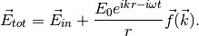
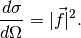

Scattering¶
A total monochromatic wave  shined on an object is described using
shined on an object is described using

Here the second term is the spherical scattered wave, while  is for shape of scattered wave.
is for shape of scattered wave.
The nature of this kind of scattered wave is that the incident wave induced the object to emit some radiation. We only consider the radiation part not the close field region.
The differential cross section is defined to be the probility of light being scattered per. For the case of scattering of electromagnetic wave is

For transverse wave,

and the final result of differential cross section becomes
